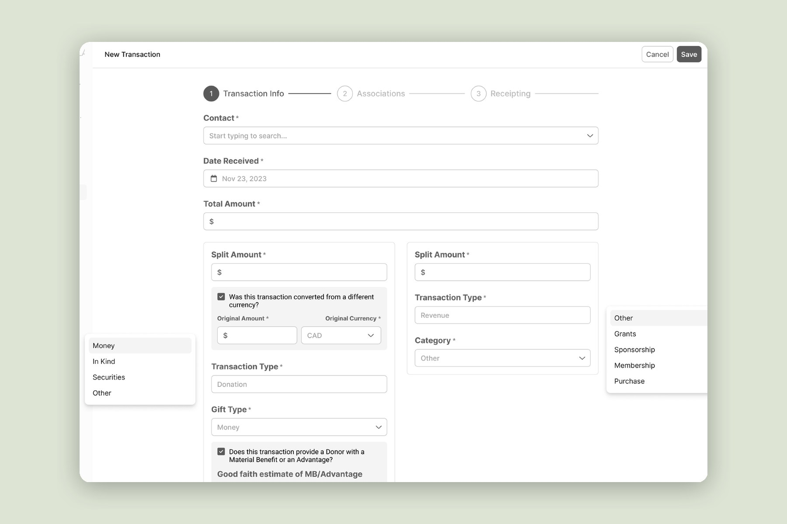
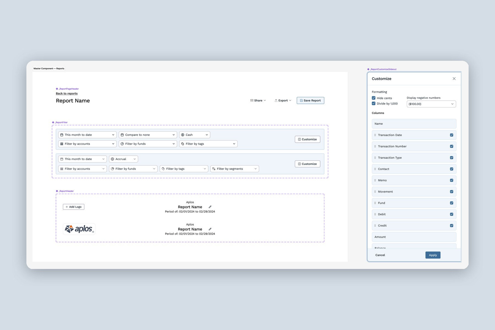
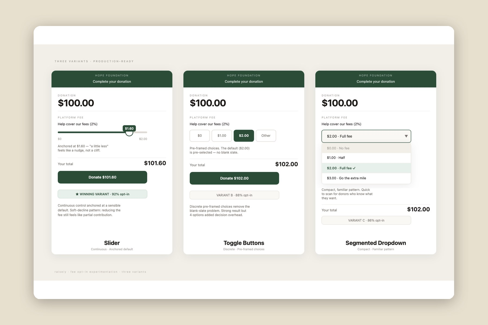
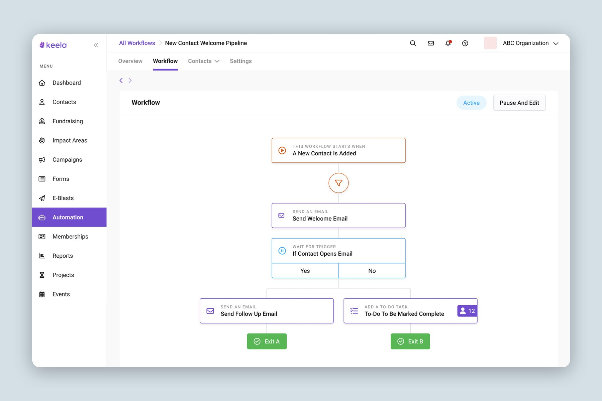

Making high-stakes numbers easy to trust.
I’m Allen, a Product Design Lead with eight years of design experience. I design the screens where people reconcile, approve, and decide with money and data on the line: accountants closing out tax season, finance teams trusting a sync, donors changing their minds at checkout. This is a shorter path through my work, ordered for a team that designs around money, data, and trust.
Numbers I can stand behind
How I design for data
Show the work, not just the answer.
Finance teams had been burned by systems that moved their data silently. On Aplos × Keela I refused the usual smart defaults and designed a mapping view and a sync status you could read at a glance: what moved, when, and what needs a human. Trust was the product.
Surface errors while they are cheap.
Accountants only learned a transaction was miscategorized at the final report, then started over. On Transaction Workflows I replaced the year-end surprise with validation that shows the health of each reporting period as an ambient signal.
Design the decision, not the default.
A redesigned fee box had a headline win of 75% to 82%, and a hidden leak behind it. I argued we pause, read what donors did after clicking Edit, and designed the moment around a fair choice. The winner reached 92% without trading away conversion.
Build confidence before capability.
The number one fear about automation was emailing all 5,000 donors by accident. A preview of exactly which contacts a workflow would touch, shown before anything goes live, is what let people turn it on.
The case studies, in the order I’d walk you through them

Transaction Workflows: The Feature That Was Causing Churn
Nonprofit accountants were spending weeks on tax reconciliation because the product treated every transaction the same way. Redesigned it into a growth lever.

Aplos × Keela: Connecting CRM and Accounting
The first cross-product integration after an acquisition, reframed from a data-sync brief into a trust problem, then turned into the exec template.

Fee Opt-In: Winning the Moment Donors Change Their Mind
A behavioral A/B test on Raisely’s donation flow. Paused a winning variant that leaned on donor confusion, and rebuilt the moment around a clear choice instead.

Orchid: A Design System Born From a Merger
Three products, 340+ scattered components, and three teams who didn’t choose to work together. Built the shared design language that made convergence possible.

Automation for Nonprofits: When the Real Obstacle Is Fear
A no-code automation system built from scratch, where the hardest design problem turned out to be fear, not complexity.
Data you can open and use, built end to end

ARND: Live Music Around You
A live map of real shows, served from a database I designed and secured. The hard part was deciding what the map should leave out.

Schematic: Visualizing Maladaptive Schemas
Eighteen psychological schemas turned into a poster system and a private, browser-only profile. Information design where the data is someone’s inner life.

Personal Color Analysis: Your Palette, From Your Camera
Live camera data graded against your skin tone, run entirely on-device so nothing leaves the browser.
I’d like to talk about the numbers behind your numbers.
Everything above opens as a full case study on this site. The complete portfolio is also at allenkang.com. Contact: allensmkang@gmail.com
An independent portfolio page. Not affiliated with or endorsed by Mastercard.